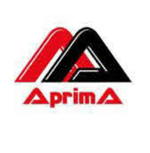

Trade Mark Journal No.2025/022 30 May 2025
UK00004202592 13 May 2025 (6)

- Class 6
- Non-precious ores; Base metals and their alloys and semi-manufactured products; Metal materials and equipment for sheltering, preserving, protecting, covering, wrapping, enclosing, storing, placing; structures made of metal, metal building frames and posts, metal boxes, metal packaging, aluminium foil, metal fences, railings, metal tubes, metal containers, metal storage facilities, metal transport crates, metal portable ladders; Metal materials for screening, and filtering; Metal doors and windows, shutters, blinds, casings and parts thereof; Non-electrical metal cables and wires; Metal hardware stores (hardware); Ventilation ducts, vents, vent covers, chimneys, chimney caps, manhole covers, gratings for ventilation, heating, sewage, telephone, underground electrical and air-conditioning installations, made of metal; Metal materials for indicating, directing, indicating, introducing: signs, panels, plaques, non-illuminated traffic direction signs made of metal; Metal pipes for transporting liquids or gases, drilling pipes and their fittings: metal valves, couplings, elbows, clips, extensions; Coin safes; Metal railway materials: rails, rail joints, switches; Metal bollards and buoys, metal pontoons, anchor anchors for sea vehicles; Metal moulds for casting (except for machine parts); Works of art made of base metals or their alloys; Lids, bottle caps made of metal; Metal poles; Metal pallets for lifting, loading and transport, metal ropes, metal hangers, ties, columns, belts, tapes and strips used in lifting and carrying loads; Metal chocks for vehicle wheels.
ASAL OTOMATİK KAPI SİSTEMLERİ LİMİTED ŞİRKETİ
Representative: Zeynel Güney